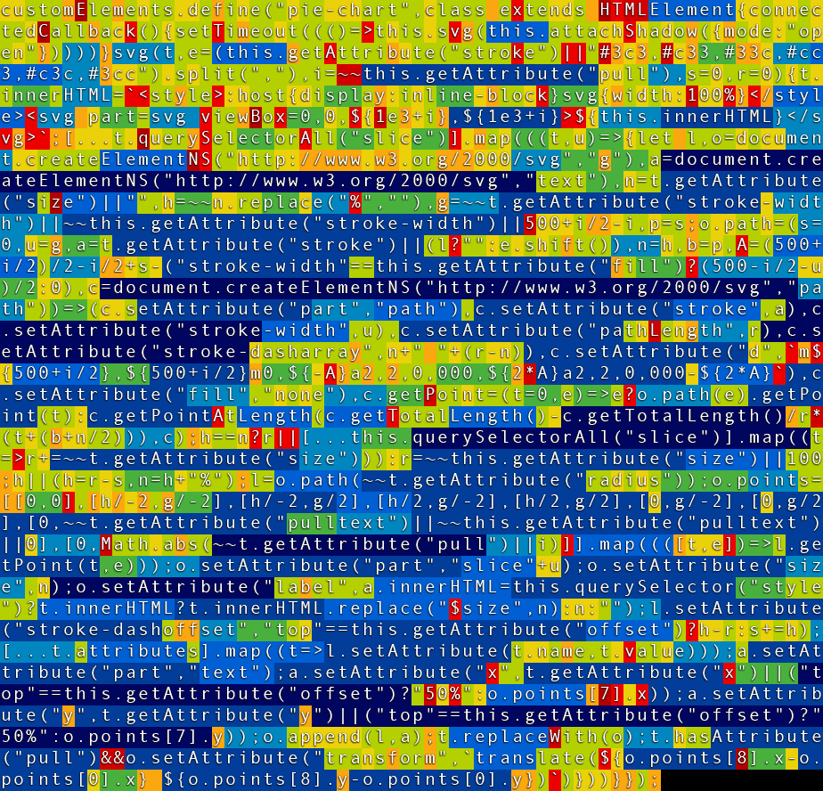

<pie-chart> and <progress-circle> examples
Load
<script src="https://pie-meister.github.io/PieMeister.min.js"></script>
OR
<script src="https://pie-meister.github.io/PieMeister-with-Progress.min.js"></script>
Use
Then ALL HTML required to display a pie-chart is:
The <pie-chart> Web Component processes all innerHTML <slice> elements and creates an SVG
Element in shadowDOM
The
Get 6 colors free
The SVG has a default 1000 x 1000 units viewBox
If a custom label is declared, the word '$size' is replaced.
An empty slice auto-completes a percentage pie
labels can be pulled with
See F12 console: There are plenty of extra attributes available to play with
The SVG <circle>, <text> and <style> elements become part of the created <svg> element
As the <pie-chart> element copies all SVG, you can apply all SVG patterns,masks,animations you can find online.
Note: in SVG, styles have higher Specificity than SVG element attributes
Thus an inline style is used to override the stroke color.
The
If you know SVG: all slice attributes will be copied to the SVG <path>
But note: in SVG STYLE has higher Specificity over Attributes
And/or color a slice
The slice
<pie-chart> Challenge: Radiation
Now knowing <pie-chart> syntax; how would you create this?
- How many slices do you see?
- How many circles do you see?
- Hint: The first slice starts at the top
Progress Circle
Use SVG
See the <progress-circle> below for a advanced version
Recreating Google Analytics multiple percentages
By adding extra slices, that always start at
and clever
CSS translating the label locations
this chart with 4 percentages can be created.
The <progress-circle> Web Component (below) creates this <pie-chart> code in 6 HTML lines
<progress-circle> Web Component
Is built on top of the PieMeister Base Class and converts innerHTML to <pie-chart> notation
The previous 30 lines HTML/CSS code can now be written as:
A single <progress-circle> Element
can be configured with Attributes:
- width
- fill
- stroke
- color
- edge
- document size=360 , or set fixed pathLength=100
- Document SVG <tspan>
- Document gap
- Document slice.point( x , y , z)
- Fix .createSlice
- (contrary to HTML) <style> definitions overrule attributes on SVG elements
- <circle /> self-closing tags do not work
-
A <slice> is converted to a SVG <path>, it can only contain SVG Elements not HTML elements
<slize size="10"><span> HTML here breaks the SVG </span></slice>
- Fun fact:
does not use any Pi calculations!
GZip analysis
PieMeister code is an optimized balance between size and performance
Can you squeeze out more bytes?
PieMeister:

PieMeister with Progress:

v2 could create multiple SVGs and stack them, like done in the ChessMeister experiment